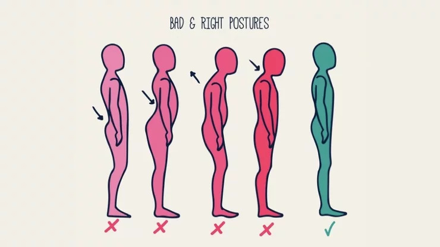
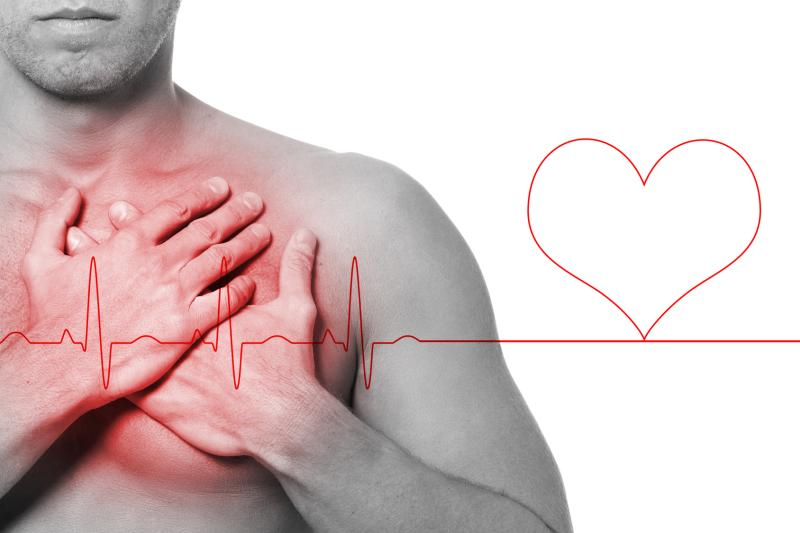
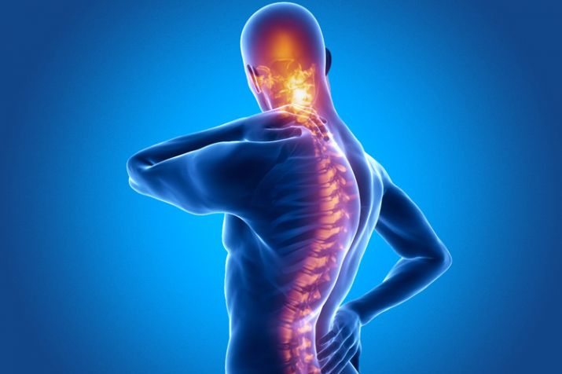
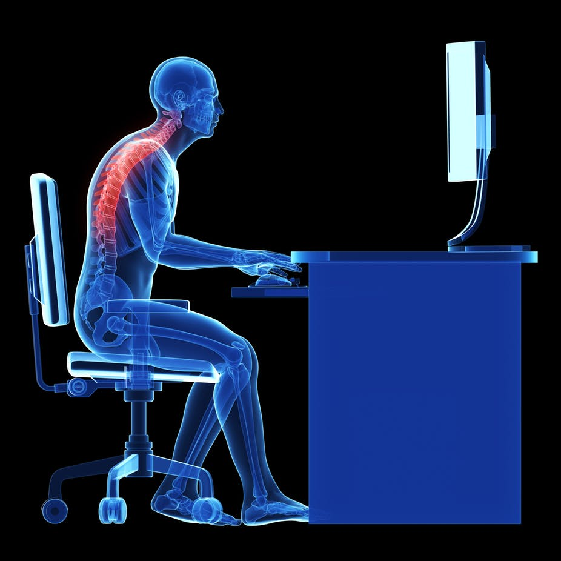

Some of the classic signs of poor posture includes , Rounded shoulders, potbelly,bent knees when standing or walking,head that either leans forward or backward,back pain,body aches and pains, muscle fatigue and headache. Increase in sedentary lifestyle has made Poor Posture an endemic these days. According to a recent survey , 80 % of Indians suffer from posture related problems.
A dangerous and alarming concern lies beneath the surface , that is the health of the body and destruction that overpowers the cosmetic problems . But why does it matter ? Here's why it should - 
The heart is directly influenced by poor posture because of the relationship between the posture, spine, and nervous system. As the body posture changes ,the interval between one heartbeat and the next changes that leads to lack of oxygen supply to the lungs. Some common side effects of bad posture on heart is feeling of choking , pressure , discomfort in the chest . Slouching has a direct effect on your blood pressure. Your heart has to work harder to mitigate the increased load from the chest wall. Constant forward posture can lead to an aortic diastolic murmur, this is a potentially lethal irregularity in the heart beat.Tight, short muscles in the chest can give you chest pain, this could lead to angina. Years of making the heart work harder than it was designed can lead to premature death.
The stress that poor posture lays can put pressure on you spine .That may lead to back pain , lower back pain and neck pain. The most common side effect of poor posture is body pain. 80 % of people suffer from back pain caused by poor posture. You may not feel any ill-effects after sitting with poor posture for a few hours, but over time the stress that poor posture places on your spine can lead to anatomical changes in your spine. This in turn can provoke back pain through the constriction of your blood vessels and nerves. In addition, the stress from poor posture can lead to back pain by causing problems with your muscles, discs, and joints.
Poor posture while working on the computer can lead to fatigue, increased muscle tension and even injury to the vertebrae over time . The seemingly harmless posture can even limit the ability to turn your head . It can cause lower immunity as well. It causes tension in the spinal cord, which interferes with the messages sent from the spine through to the side branches of the sympathetic nervous system — the part of our autonomic nervous system that controls heart rate, breathing, digestion, hormone release and defense cells for immunity. 
Posture causes changes in our hormone levels. Body language symbolizes power and can actually affect our concentration and decision-making, subconsciously. A research measured the appetite for risk of participants in either expansive, powerful poses, or constricted poses (occupying minimal space, keeping limbs close to the body). Those in the powerful poses not only felt more powerful and in control, but were 45% more likely to concentrate and remember things better and take a risky bet.So clearly, our posture has more to do with our minds we might have thought. And in fact, it seems like our bodies come first—when we alter our posture and body language, it subconsciously influences our thinking power , remembering skills , concentration skills and decision-making.
When we habitually sit, stand or walk in a less than a fully aligned position, muscles stretch or contract to accommodate. This can result in chronic imbalances that can lead to pain. Studies dating back to the 19th century also suggest our posture affects mood, energy and self-confidence, all of which affect how attractive we appear to others. One of the most striking parts of our appearance is our stance and presence. The right posture can give you the respectable stature you need to make the right impression, and you can enjoy a number of added benefits aside from aesthetics including like , keeping bones and joints properly aligned to encourage proper muscle functioning, decreasing wear of joints and preventing spine from fixing in wrong positions.